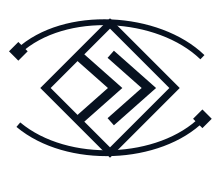

02 / Identity
One primary mark. One app glyph.
Primary identity is the edge mark — diamond, nested chevrons and two arcs — with the ACTIVE-ESL wordmark. The same mark is the site favicon.
Primary — edge mark

ACTIVE-ESL
Primary / horizontal
ACTIVE-ESL
Stacked / compact
Symbol / mid-size spaces

ACTIVE-ESL Mono / productionFavicon / app icon
Square crop of the edge mark. Signal-aperture AE is not used on the public site.
 Favicon / app icon
Favicon / app icon
Rules
- Use the edge mark for web chrome, favicon, print, PCB, enclosure and UV
- Do not use the signal-aperture AE on the public site
- Never stretch, skew, condense, redraw or rearrange a lockup
- Clear space of at least one terminal-node width around the edge mark
- Edge symbol minimum ~28 px digital height; horizontal lockup from 140 px; print from 28 mm
- Do not ship the archived three-orbit electric-edge concept
- Never brand a product as “Electric Edge”